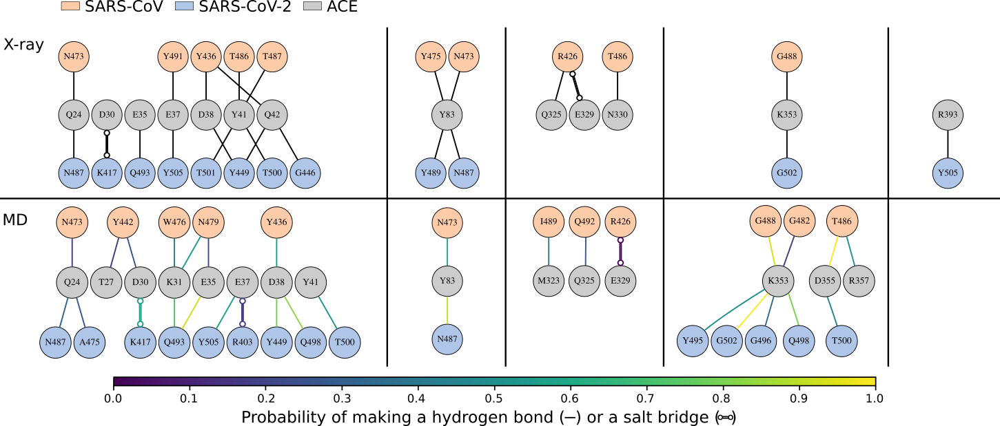

Membrane Dynamics:
While bacterial membranes are often thought of as passive barriers, they are in fact dynamic structures whose physical properties play a direct role in antibiotic resistance. One striking example is Staphylococcus aureus, which produces a golden-colored carotenoid pigment called staphyloxanthin. Known for its antioxidant properties—thanks to its extended system of conjugated double bonds—this molecule does more than neutralize free radicals. It also alters the biophysical properties of the bacterial membrane.

Our research focuses on understanding how staphyloxanthin affects membrane dynamics at the molecular level. Experimental studies have shown that its incorporation into the lipid bilayer increases membrane rigidity, making it more resistant to pore formation by antimicrobial peptides. This physical stiffening of the membrane can reduce the efficacy of many front-line antibiotics, providing S. aureus with a form of non-genetic resistance.

Using molecular dynamics simulations, we explored how staphyloxanthin (STX) interacts with model S. aureus membranes composed of DMPG or DPPG lipids, which differ in acyl chain length and thus membrane thickness. We observed that STX adopts distinct orientations depending on the membrane environment: in DMPG bilayers, STX tends to remain vertically aligned with the membrane normal, whereas in DPPG, it gradually shifts toward a more horizontal orientation over time. This behavior appears to be driven by hydrophobic mismatch between the carotenoid and the bilayer core. The accompanying figure shows both the time evolution and the distribution of STX’s tilt angle relative to the membrane normal in the two systems, revealing a broader and more horizontal orientation profile in DPPG compared to DMPG. These differences suggest that membrane composition strongly influences the dynamic positioning of STX within the bilayer.

In addition to orientation, we analyzed how STX affects local membrane biophysics. Compared to control simulations without STX, we find that the presence of STX alters the local membrane thickness and area per lipid in its immediate vicinity, indicating a restructuring of the surrounding lipid environment. These effects are more pronounced when STX adopts a vertical orientation, where it inserts more deeply into the bilayer. In this configuration, STX also leads to an increase in the lipid order parameter, suggesting that it locally stiffens the membrane by promoting more ordered acyl chain packing. Together, these observations highlight STX's role in reshaping membrane structure at the nanoscale, potentially contributing to the physical barrier properties that protect S. aureus from external stress.
Protein Dynamics:
Proteins are inherently dynamic molecules, constantly fluctuating between different conformations that are often essential to their function. These motions span a wide range of timescales, from rapid side-chain rotations to large-scale domain rearrangements, and they play critical roles in processes such as ligand binding, allosteric regulation, and molecular recognition. Traditional static structures, while informative, offer only a limited view of protein behavior. By contrast, molecular dynamics simulations allow us to capture the continuous motion of proteins in atomistic detail, revealing how flexibility and structural transitions contribute to biological activity. This dynamic perspective is especially important when studying protein–protein interactions, where subtle shifts in interface geometry and residue positioning can significantly influence binding strength and specificity.

Viruses exploit surface proteins to recognize and bind to receptors on host cells, initiating infection through highly specific protein–protein interactions. In coronaviruses, the spike glycoprotein mediates this process, with its receptor-binding domain (RBD) engaging the human ACE2 receptor. Although SARS-CoV and SARS-CoV-2 share a similar mode of entry, SARS-CoV-2 binds more tightly to ACE2, a difference that has been linked to its higher transmissibility. To understand the molecular origin of this enhanced affinity, we performed molecular dynamics simulations of both RBD–ACE2 complexes, focusing on how sequence variations at the interface influence the stability, dynamics, and binding free energy of the interaction.
To characterize the conformational landscape of the RBD–ACE2 complexes, we analyzed 3-microsecond molecular dynamics trajectories using a two-dimensional RMSD matrix that compares structural similarity between all pairs of frames. This map reveals the presence of distinct conformational states sampled during the simulation, indicating that the interface is not static but fluctuates between several binding modes. Based on this matrix, we performed clustering analysis and identified five dominant conformational clusters that represent the most frequently visited structural states. These representative structures not only capture the dynamic diversity of the complex but also served as starting points for further investigations in a collaborative study focused on enhanced sampling and drug screening.

To further dissect the molecular basis of binding affinity, we constructed interaction networks that map hydrophobic and hydrophilic contacts at the RBD–ACE2 interface for both SARS-CoV and SARS-CoV-2. These networks capture the frequency and persistence of residue-level interactions across the simulation trajectories. Our analysis revealed that SARS-CoV-2 forms a denser and more stable network of hydrogen bonds compared to SARS-CoV, with several key interactions occurring with significantly higher probability. These differences in contact patterns help explain the enhanced affinity of SARS-CoV-2 and are consistent with binding free energy calculations, which show that mutating SARS-CoV-2 interface residues to their SARS-CoV counterparts reduces binding strength. The correspondence between simulation-derived contacts and experimental mutational data has led to multiple citations, highlighting the predictive power of this approach in understanding viral adaptation.
Force Field Development:


Force field development is a critical aspect of computational biophysics, enabling the accurate simulation of molecular systems and the prediction of their behaviors. A force field consists of a set of mathematical functions and parameters that describe the interactions between atoms, including bond stretching, angle bending, torsional rotation, and nonbonded interactions such as van der Waals and electrostatic forces. The accuracy of these models depends on the careful parameterization against experimental data, quantum mechanical calculations, and high-level physical principles. As systems grow in complexity—such as in the case of large biomolecules or interactions with external molecules—force fields must be adapted and refined to accurately capture the subtle interplay of atomic forces. Whether for small molecules, proteins, or lipid membranes, force field development is an iterative process that seeks to balance computational efficiency with physical accuracy, ensuring reliable predictions for a wide range of biological phenomena.
A key aspect of our force field development focuses on improving the representation of ion-protein interactions and their role in biological processes, such as enzyme activity and signal transduction. Ions, such as Li⁺, Mg²⁺, and Na⁺, are crucial for the proper functioning of many proteins and enzymes, particularly in systems where metal cofactors are involved in catalysis or structural stability. Accurate modeling of these interactions requires a detailed understanding of both the electrostatic and polarizable interactions between ions and surrounding protein residues. Additionally, the interactions of ions with nucleotides, such as ATP and GTP, are central to many cellular processes, including energy transfer and molecular signaling. To capture these interactions, we have refined parameters within our force field to better represent ion coordination, solvation, and their binding to protein or nucleotide moieties. These improvements not only enhance the accuracy of simulations but also offer insights into the role of metal ions in regulating biological mechanisms, including the influence of lithium in psychiatric disorders.
Molecular mechanics simulations have the potential to provide detailed insights into the interactions between ions, proteins, and nucleotides, which are essential in many biological processes. However, accurately modeling these interactions, especially those involving divalent cations like Mg²⁺, has been a challenge. To address this, we developed AMOEBA-HFC by correcting key physical aspects of ion interactions, particularly for cation-coordinating functional groups. These improvements have led to notable advancements, including a reduction in interaction energy errors for Mg²⁺–protein and Na⁺–protein interactions, decreasing the mean absolute errors from 8.7 to 5.3 kcal/mol and 9.6 to 6.3 kcal/mol, respectively. Additionally, simulations with AMOEBA-HFC now predict Mg²⁺–ATP binding free energies with greater accuracy, aligning closely with experimental data. These refinements not only improve the accuracy of ion binding predictions but also offer new insights into how ions like Mg²⁺ interact with ATP in enzymatic processes, which could ultimately guide the development of more effective drugs and therapies targeting these interactions.
Lithium (Li⁺) is a widely used therapy for individuals with bipolar disorder and is increasingly being explored for its therapeutic potential in other neurological conditions. However, the exact molecular mechanism underlying Li⁺’s action remains unclear, limiting its predictability across various conditions. A key issue in understanding Li⁺’s therapeutic action is determining the fraction of Li⁺ that is free versus bound to ATP in cellular environments. To address this, we utilized molecular dynamics (MD) simulations and kinetic modeling, employing the polarizable AMOEBA-HFC force field, which has been benchmarked against high-level quantum mechanical and experimental data. Our results reveal that ATP, when bound to Mg²⁺ (ATP·Mg), has two binding sites for monovalent cations like Li⁺, Na⁺, and K⁺, with Li⁺ competing for these sites. While Li⁺ has a stronger binding affinity than Na⁺ and K⁺, its therapeutic concentration limits its loading capacity. However, at higher ATP concentrations, up to 50% of Li⁺ can be sequestered by ATP·Mg under physiological conditions. This discovery helps to clarify the bioactive form of Li⁺ and provides new structural, thermodynamic, and kinetic insights into how ions, including Li⁺, interact with ATP, shedding light on the molecular mechanisms behind lithium's therapeutic effects.
Bio-Art Blender Plugin:
Blender plugin for easy import and visualization of proteins, DNA/RNA, and ligands with customizable membranes, animation, and ligand diffusion. Supports batch material application and works with any 3D mesh. Enables fast, accurate scientific and artistic molecular visuals. Trusted by over 500 users worldwide. Blender is a free, open-source 3D creation tool.


Math Functions Blender Plugin:
Blender plugin for creating customizable mathematical functions, parametric curves, and atomic orbitals. Enables precise, flexible modeling and visualization of complex shapes directly within Blender, enhancing both scientific and artistic workflows.


Molecular Dynamics LJ Engine:
Lightweight molecular dynamics engine for simulating Lennard-Jones systems, built for speed, clarity, and educational or research use in computational physics.


Scientific Animation:
Scientific animation created during COVID to communicate complex biological processes, featured on IBM’s official YouTube channel. Combines accuracy with visual clarity to support public understanding of science.


Journal Cover Art:


Models and Art:


Our ability to understand and control disease depends on our ability to

Data Fellow – MIT Biological Engineering Data Lab
(Spring 2020++)
Providing
Peer counsellor – MIT Biological Engineering REFS
(Spring 2019++)
We provide 1-on-1
Teaching Assistant – MIT Biological Engineering
(Fall 2019)
Part of the teaching team for the introductory graduate course
Teaching Assistant – Uniandes Biomedical Engineering
(Spring, Fall 2016)
Part of the teaching team
Teaching Assistant – Uniandes Student Affairs
(Fall 2015)
Part of the teaching team for
Teaching Assistant – Uniandes Biological Sciences
(Spring 2015)
Part of the teaching team for the Parasitology Laboratory course, a
- Explore my coding projects on GitHub
- View my published work on Google Scholar and ORCiD
- Download my two-page CV
- Reach out to julian-melendez@hotmail.com